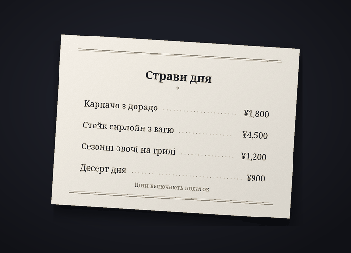

Бот для перекладу чату в Discord
Спілкуйтеся в Discord — кожен своєю мовою
Cozirom — це бот для Discord, який перекладає чат мовою співрозмовника. Достатньо його ввімкнути, і ваші повідомлення публікуватимуться в перекладі під вашим ім’ям і з вашим аватаром. Текст на зображеннях він теж перекладає.
З чого початиПереглянути тарифи
Переклади робить ШІ (Claude від Anthropic). Можливі помилки, тому важливе звіряйте з оригіналом.
Що вміє бот
Один бот перекладає текст, зображення й голос
Ліміти тарифів рахуються в перекладах. Одне повідомлення, перекладене на одну мову, — це 1 переклад.
6 функцій
У перекладах
Автопереклад
Достатньо один раз ввести
/переклад увімк, і ваші повідомлення на цьому сервері публікуватимуться мовою співрозмовника під вашим ім’ям і з вашим аватаром. Оригінал лишається під перекладом дрібним шрифтом, а кнопка показує його повністю.
показує його повністю.Переклади1 за повідомлення
Текст на зображеннях
Меню, екрани ігор, меми: якщо на зображенні є текст, бот його прочитає й перекладе. Натисніть значок
 під зображеннями тих, хто ввімкнув переклад, або скористайтеся перекладом правим кліком. Результат бачить лише той, хто його запросив, а зображення без тексту не враховуються.
під зображеннями тих, хто ввімкнув переклад, або скористайтеся перекладом правим кліком. Результат бачить лише той, хто його запросив, а зображення без тексту не враховуються.ПерекладиБлизько 9 за зображення
Переклад на зображенні
Через значок
 ви отримаєте копію зображення, де вихідний текст стерто, а на його місці намальовано переклад. Спершу вибрано шрифт «Як в оригіналі», близький до вихідних літер, а перемикатися між наборами шрифтів (до 15), як-от «Із засічками», «Рукописний» і «Комікс», можна без витрати перекладів. Найкраще це працює на горизонтальному тексті, наприклад на знімках екрана, мемах, екранах ігор і меню, а результат бачить лише той, хто натиснув.
ви отримаєте копію зображення, де вихідний текст стерто, а на його місці намальовано переклад. Спершу вибрано шрифт «Як в оригіналі», близький до вихідних літер, а перемикатися між наборами шрифтів (до 15), як-от «Із засічками», «Рукописний» і «Комікс», можна без витрати перекладів. Найкраще це працює на горизонтальному тексті, наприклад на знімках екрана, мемах, екранах ігор і меню, а результат бачить лише той, хто натиснув.ПерекладиБлизько 19 за зображення


Приклад: оригінальне фото (меню японською мовою) і те саме фото, де текст стерто, а на його місці шрифтом «Із засічками» намальовано переклад українською. Голосові повідомлення
Натисніть правою кнопкою на голосове повідомлення, надіслане з мобільного застосунку, і ви отримаєте розшифровку сказаного та її переклад. Розшифровуються повідомлення тривалістю до 3 хвилин, а повідомлення без мовлення не враховуються.
Переклади1 за секунду плюс переклад10-секундне повідомлення — зазвичай 11
Чотири тони
Сленг, невимушений, дружній чи офіційний: тон обирається для кожного сервера. З друзями на ти, на новому місці на ви. На тарифі Guest (безкоштовному) усі чотири тони доступні перші 14 днів, а потім лишається дружній.
ПерекладиПлатні: усі чотири. Free: перші 14 днів
31 мова
Для перекладу доступна 31 мова. Екрани бота й назви команд показуються 30 мовами Discord, тож співрозмовник налаштовує бота своєю мовою.
Переклади31 для перекладу, 30 для інтерфейсу

Як почати
Три кроки, і переклад з’явиться під вашим ім’ям
Додайте бота на сервер
Адміністратор сервера додає бота на сервер. Посилання-запрошення можна попросити через сервер підтримки.
Увімкніть переклад
Кожен, хто хоче, щоб його повідомлення перекладалися, вводить
/переклад увімкна цьому сервері. Бот вгадає вашу мову й мову співрозмовника та відкриє панель налаштувань. Якщо він помилився, змініть вибір у спадних меню.Пишіть як завжди
Пишіть як завжди, і переклад з’явиться під вашим ім’ям. Почніть із тарифу Guest (безкоштовного), а якщо знадобиться більше, виберіть інший на сторінці тарифів.
Конфіденційність
Повідомлення для перекладу й зображення надсилаються лише до Anthropic (США), а звук голосових повідомлень — лише до Google (США). Бот зберігає оригінал опублікованого перекладу 14 днів, а кеш перекладів — 30 днів і не зберігає зображень, звуку й отриманого з них тексту. Вміст чатів ніколи не потрапляє до журналів, а команда /переклад видалити-дані будь-коли видаляє ваші дані.